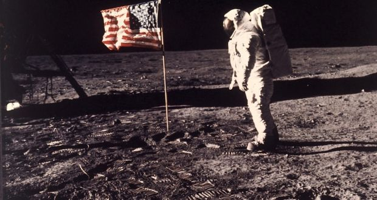

The moon is the largest and brightest object in our night sky, the presence of the moon makes the earth a more livable planet unlike other planets with harsh weathers and climates. The presence of the moon causes tides, creating a rhythm that has guided humans for thousands of years.
Earth’s Moon is the fifth largest of the 200+ moons orbiting planets in our solar system, and is the only natural satellite for our planet, it was referred to as “The Moon” because people did not know about the existence of other moons until Galileo Galilei discovered four moons orbiting Jupiter in 1610.
Earth’s Moon is the only place beyond Earth where humans have set foot. NASA currently has three robotic spacecraft exploring the Moon.
Size and Distance
With a radius of about 1,740 kilometers, the Moon is less than a third of the width of the earth. The Moon is an average of 384,400 kilometers away from the Earth, this means that 30 Earth sized planets could fit in between the distance between the Earth and the Moon.
Orbit and Rotation
The Moon is rotating at the same rate that it revolves around Earth (called synchronous rotation), so the same hemisphere or side faces the Earth all the time. This has resulted in some people calling the farther side – the hemisphere or side we never see from the Earth – the “dark side” but that’s misleading. As the Moon orbits the Earth, different parts of it are in sunlight or darkness at different times. The changing illumination is why, from our perspective, the Moon goes through phases.
The Moon makes a complete orbit around Earth in 27 Earth days and rotates or spins at that same rate. In about 50 billion years, the Moon will stop moving away from us and settle into a nice, stable orbit. At this point, the Moon will take about 47 days to go around the Earth.
Surface
With too sparse an atmosphere to impede impacts, a steady rain of asteroids, meteoroids, and comets strikes the surface of the Moon, leaving numerous craters behind. Tycho Crater is more than 85 kilometers wide.
Over billions of years, these impacts have ground up the surface of the Moon into fragments ranging from huge boulders to powder. Nearly the entire Moon is covered by a rubble pile of charcoal-gray, powdery dust and rocky debris called the lunar regolith. Beneath is a region of fractured bedrock referred to as the megaregolith.
The light areas of the Moon are known as the highlands. The dark features, called maria (Latin for seas), are impact basins that were filled with lava between 4.2 and 1.2 billion years ago. These light and dark areas represent rocks of different composition and ages, which provide evidence for how the early crust may have crystallized from a lunar magma ocean. The craters themselves, which have been preserved for billions of years, provide an impact history for the Moon and other bodies in the inner solar system.
The temperature on the Moon reaches about 127 degrees Celsius when in full Sun, but in darkness, the temperatures plummet to about -173 degrees Celsius.
The Moon has a very thin and weak atmosphere, called an exosphere. It does not provide any protection from the Sun’s radiation or impacts from meteoroids.

An astronaut standing on the surface of the moon
Structure
Earth’s Moon has a core, mantle, and crust.
The Moon’s core is proportionally smaller than other terrestrial bodies’ cores. The solid, iron-rich inner core is 240 kilometers in radius. Its surrounded by a liquid iron shell 90 kilometers thick. A partially molten layer with a thickness of 150 kilometers surrounds the iron core.
The mantle extends from the top of the partially molten layer to the bottom of the Moon’s crust. It is most likely made up of magnesium, iron, silicon, and oxygen atoms.
The crust has a thickness of about 70 kilometers on the Moon’s near side hemisphere and 150 kilometers on the far side. It is made up of oxygen, silicon, magnesium, iron, silicon, and oxygen atoms.
The crust has a thickness of about 70 kilometers on the Moon’s near-side hemisphere and 150 kilometers on the far-side. It is made of oxygen, silicon, magnesium, iron, calcium, and aluminum, with small amounts of titanium, uranium, thorium, potassium and hydrogen.
Long ago the Moon had active volcanoes, but today they are all dormant and have not erupted for millions of years.